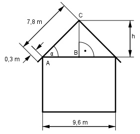

Aufgabe 84 Ein Haus hat ein Satteldach mit einer Breite von 9,6 m und Sparren mit einer Länge von 7,8 m, die 0,3 m überstehen. Wie groß ist der Neigungswinkel α der Sparren und die Höhe h des Daches?

Im Dreieck ABC: 9,6/2 m cos α = -------------------- = 0,64 --> α = 50,2° (7,8 m – 0,3 m) h sin α = ------------------- |*7,5 (7,8 m – 0,3 m) h = sin 50,2° * 7,5m = 0,7683 * 7,5 m = 5,8 m